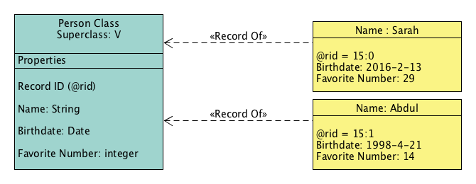

Classes
Here we will learn about how classes structure data in OrientDB. A class in OrientDB is similar to a table in a relational database with some key differences. In this section you will learn how to see all of the classes in your database and how to create classes of your own. You’ll also learn how to provide schema on top of classes by defining constraints for a class’s properties. Finally you’ll learn how to access the records stored within your classes.
The Class is a concept drawn from the Object-oriented programming paradigm. In OrientDB a class is a data model that allows you to define certain rules for records that belong together. For example, a class ‘Person’ can store information about people. You can structure your class such that a record in the class must have certain properties (i.e. Name, Birthdate, Favorite Number, etc…).

In the traditional document database model classes are comparable to collections, while in the Relational database model (R-DBMS) they are comparable to tables. Classes are not tables though. Classes provide efficient means for storage of schema-less data. We’ll see more about schema-less, schema-full, and schema-mixed data models later (See ‘Adding Properties to a Class’ below).
Like many database management systems, OrientDB uses the Record as an element of storage. There are many types of records, but with the Document Database API records always use the Document type. A document is formed by a set of key/value pairs. A document can belong to a class.
In the example above, there are two documents. One document contains information for Sarah and another for Abdul. The keys 15:0 and 15:1 refer to each document respectively.
To list all the configured classes on your system, use the LIST CLASSES command in the console:
orientdb> LIST CLASSES
orientdb {db=playingwithClasses}> LIST CLASSES
CLASSES
+----+-----------+-------------+-----------------+-----+
|# |NAME |SUPER-CLASSES|CLUSTERS |COUNT|
+----+-----------+-------------+-----------------+-----+
|0 |_studio | |_studio(13) | 1|
|1 |Blue |[Color] |blue(19) | 0|
|2 |Color |[V] |- | 0|
|3 |E | |e(11),e_1(12) | 0|
|4 |OFunction | |ofunction(6) | 0|
|5 |OIdentity | |- | 0|
|6 |ORestricted| |- | 0|
|7 |ORole |[OIdentity] |orole(4) | 3|
|8 |OSchedule | |oschedule(8) | 0|
|9 |OSequence | |osequence(7) | 0|
|10 |OTriggered | |- | 0|
|11 |OUser |[OIdentity] |ouser(5) | 3|
|12 |Person |[V] |person(15) | 0|
|13 |Red |[Color] |red(17),red_1(18)| 0|
|14 |V | |v(9),v_1(10) | 0|
+----+-----------+-------------+-----------------+-----+
| |TOTAL | | | 7|
+----+-----------+-------------+-----------------+-----+
If you are using studio, then you can see the same information by clicking on the ‘schema’ tab.
Here we can see that there are 14 classes in the database. Class 12 refers to person. There is also a class Color which is the super-class of Red and Blue. Color and Person both have super-classes called V. The class V is important for using OrientDB’s graph model. We’ll see more about Superclasses and V later in the tutorial. Let’s move on now to working with classes.
Working with Classes
In order to start using classes with your own applications, you need to understand how to create and configure a class for use. The class in OrientDB is similar to the table in relational databases, but unlike tables, classes can be schema-less, schema-full or mixed. A class can inherit properties from other classes thereby creating trees of classes (though the super-class relationship).
Each class has its own cluster or clusters, (created by default, if none are defined). For now we should know that a cluster is a place where a group of records are stored. We’ll soon see how clustering improves performance of querying the database.
For more information on classes in OrientDB, see Class.
To create a new class, use the CREATE CLASS command:
orientdb> CREATE CLASS Student
Class created successfully. Total classes in database now: 15
This creates a class called Student. Given that no cluster was defined in the CREATE CLASS command, OrientDB creates a default cluster called student, to contain records assigned to this class. For the moment, the class has no records or properties tied to it. It is now displayed in the CLASSES listing and in the schema manager of Studio.
Adding Properties to a Class
As mentioned above, OrientDB allows you to work in a schema-less mode. That is, it allows you to create classes without defining their properties. However, properties are mandatory if you would like to define indexes or constraints for a class. Let’s follow OrientDB’s comparison to relational databases again… If classes in OrientDB are similar to tables, then properties are the columns on those tables.
To create new properties on Student, use the CREATE PROPERTY command in the console or in the browse window of studio:
orientdb>CREATE PROPERTY Student.name STRINGProperty created successfully with id=1 orientdb>CREATE PROPERTY Student.surname STRINGProperty created successfully with id=2 orientdb>CREATE PROPERTY Student.birthDate DATEProperty created successfully with id=3
These commands create three new properties on the Student class. The properties provide you with areas to define an individual student’s name, surname, and date of birth.
Displaying Class Information
Occasionally you may need to reference a particular class to see what clusters it belongs to, or any properties configured for the class’s use. Use the INFO CLASS command to display information about the current configuration and properties of a class.
To display information on the class Student, use the INFO CLASS command:
orientdb> INFO CLASS Student
Class................: Student
Default cluster......: student (id=96)
Supported cluster ids: [96]
Properties:
-----------+--------+--------------+-----------+----------+----------+-----+-----+
NAME | TYPE | LINKED TYPE/ | MANDATORY | READONLY | NOT NULL | MIN | MAX |
| | CLASS | | | | | |
-----------+--------+--------------+-----------+----------+----------+-----+-----+
birthDate | DATE | null | false | false | false | | |
name | STRING | null | false | false | false | | |
surname | STRING | null | false | false | false | | |
-----------+--------+--------------+-----------+----------+----------+-----+-----+
Adding Constraints to Properties
Constraints create limits on the data values assigned to properties. For instance, the type, the minimum or maximum size of, whether or not a value is mandatory or if null values are permitted to the property.
Constraints create limits on the data values assigned to properties. For instance, if ‘MANDATORY’ is set to true for name in student, then every record in the student class must have a name. If we set ‘MIN’ to three, then every name must also be at least three characters long.
The only two properties required when using the ‘create a property’ command for a class are ‘NAME’ and ‘TYPE’.
To add a constraint to an existing property, use the ALTER PROPERTY command:
orientdb> ALTER PROPERTY Student.name MIN 3
Property updated successfully
This command adds a constraint to Student on the name property. After running this command, Student will allow any record to be stored unless the record has a property called ‘Name’. If the records has such a property then ‘Student’ will reject the record if the value in ‘Name’ is less then three characters.
By setting property, ‘MANDATORY’, to true for Student’s Name we can also guarantee that every record added to student has a name.
orientdb> ALTER PROPERTY Student.name MANDATORY true
There are many ways to use constraints on properties. They can allow you to build a data-model that tells a story about your own use case. Constraints can also help ensure that you’re database communicates with other components of a larger application by only allowing storage of values that another application is able to recognize.
Viewing Records in a Class
Classes contain and define records in OrientDB. You can view all records that belong to a class using the BROWSE CLASS command. You can also see data belonging to a particular record with the DISPLAY RECORD command.
Note: you cannot display a record unless you have recently received a query result with records to browse (select statement, ‘browse class x’, etc…).
Earlier we created a Student class and defined some schema for records belonging to that class, but we didn’t create any records or add any data. Thus, running ‘BROWSE CLASS’ on the Student class returns no results. Luckily OrientDB has a few preconfigured classes and records that we can query.
Let’s take the class OUser for example.
orientdb> INFO CLASS OUser
CLASS 'OUser'
Super classes........: [OIdentity]
Default cluster......: ouser (id=5)
Supported cluster ids: [5]
Cluster selection....: round-robin
Oversize.............: 0.0
PROPERTIES
----------+---------+--------------+-----------+----------+----------+-----+-----+
NAME | TYPE | LINKED TYPE/ | MANDATORY | READONLY | NOT NULL | MIN | MAX |
| | CLASS | | | | | |
----------+---------+--------------+-----------+----------+----------+-----+-----+
password | STRING | null | true | false | true | | |
roles | LINKSET | ORole | false | false | false | | |
name | STRING | null | true | false | true | | |
status | STRING | null | true | false | true | | |
----------+---------+--------------+-----------+----------+----------+-----+-----+
INDEXES (1 altogether)
-------------------------------+----------------+
NAME | PROPERTIES |
-------------------------------+----------------+
OUser.name | name |
-------------------------------+----------------+
The OUser class defines the users on your database.
To see records assigned to the OUser class, run the BROWSE CLASS command:
orientdb> BROWSE CLASS OUser
---+------+-------+--------+-----------------------------------+--------+-------+
# | @RID | @Class| name | password | status | roles |
---+------+-------+--------+-----------------------------------+--------+-------+
0 | #5:0 | OUser | admin | {SHA-256}8C6976E5B5410415BDE90... | ACTIVE | [1] |
1 | #5:1 | OUser | reader | {SHA-256}3D0941964AA3EBDCB00EF... | ACTIVE | [1] |
2 | #5:2 | OUser | writer | {SHA-256}B93006774CBDD4B299389... | ACTIVE | [1] |
---+------+-------+--------+-----------------------------------+--------+-------+
 | In the example, you are listing all of the users of the database. While this is fine for your initial setup and as an example, it is not particularly secure. To further improve security in production environments, see Security. |
When you run BROWSE CLASS, the first column in the output provides the identifier number, which you can use to display detailed information on that particular record.
To show the first record browsed from the OUser class, run the DISPLAY RECORD command:
orientdb> DISPLAY RECORD 0
DOCUMENT @class:OUser @rid:#5:0 @version:1
----------+--------------------------------------------+
Name | Value |
----------+--------------------------------------------+
name | admin |
password | {SHA-256}8C6976E5B5410415BDE908BD4DEE15... |
status | ACTIVE |
roles | [#4:0=#4:0] |
----------+--------------------------------------------+
Bear in mind that this command references the last call of BROWSE CLASS. You can continue to display other records, but you cannot display records from another class until you browse that particular class.
Class Review
Here are some key things to remember about classes:
-
A class in OrientDB is similar to a table in a relational database with some key differences. Among those differences we see tables are schema-full, and classes can be schema-full, schema-less, or mixed.
-
You can see all of the classes in your database by running ‘LIST CLASSES’ in console or by visiting the ‘Schema Manager’ in Studio.
-
You can create a class by running the ‘create class
’ command in console, or by running the same command in the ‘Browse’ window of studio. -
You can use the commands, ‘Create property
[constraints]’ and ‘Create property [constraints]’ to give schema to a class. -
To see properties and constraints associated with a class you can run ‘info class
’. -
To see information about a the records within a class run ‘Browse class
’. -
To see information about a specific record of a class use the command ‘Display record
’. Note: You must have recently queried a class for it’s records before using this command. ‘ ’ references the number in the left-most column of the previous query’s result.
Congratulations! You are now familiar with classes in OrientDB. If you’re ready to explore clusters then let’s move on to the clustering section of this tutorial.